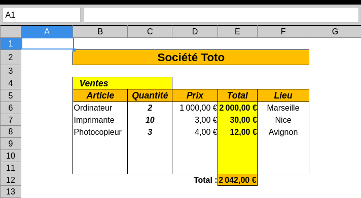

TP1 : Prise en main
💡 Ce TP est inspiré de sources en partie inconnues.Consignes
Consignes tableur
Vous créerez un nouveau fichier tableur possédant une unique feuille nommée .
À la fin du TP vous importerez le fichier dans le sujet de TP.
Exercices
Exercice 1
Modifiez la feuille de calcul afin d'obtenir le tableau suivant :
